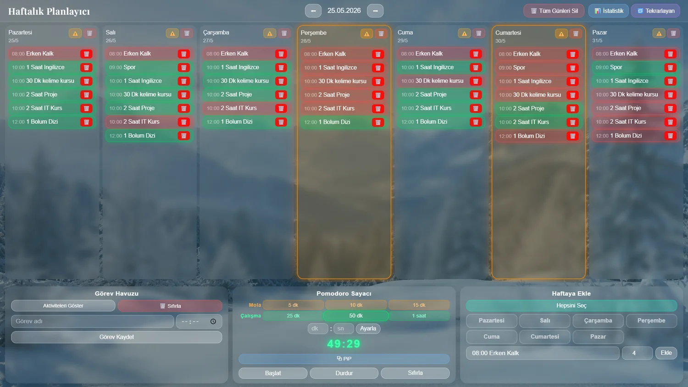
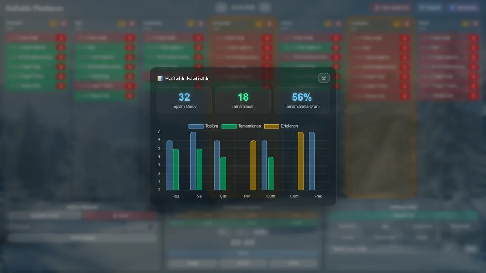
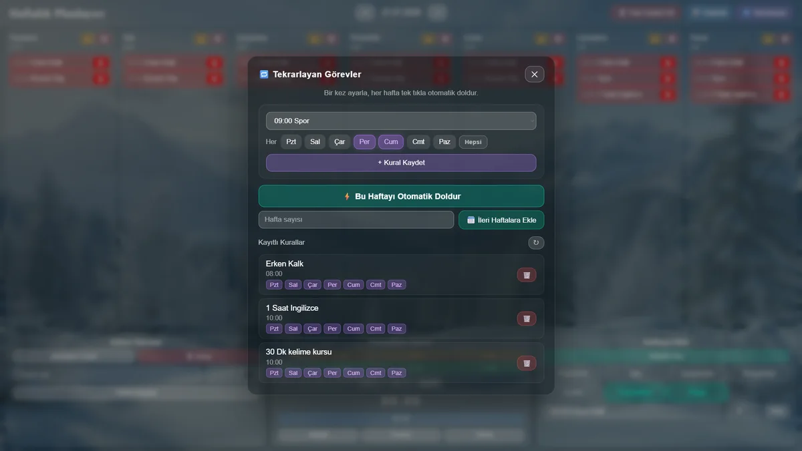

Task Board & Pomodoro Timer

The whole week on one screen: seven day columns, completed tasks in green and pending ones in red; below that the task pool, the Pomodoro timer and the add-to-week panel.
A single-user planner I wrote to keep my own weekly routine. Instead of an off-the-shelf to-do app I combined the three things I actually needed on one screen: a weekly board, recurring task rules, and a Pomodoro timer that stays open while I work.
The app has three panels. On the left is the task pool — you define a task once with a name and a time, and never type it again. On the right, the add to week panel copies a pooled task to the days you pick, across as many weeks ahead as you want, in one go. The Pomodoro sits in the middle.
The board itself is seven day columns, and tasks move between days with HTML5 drag & drop; the move is written to the server through its own endpoint. On mobile the columns don't fit side by side, so day switching happens by touch swipe, with dots at the bottom showing which day you're on.
Two details matter in the Pomodoro. First: the timer writes the end time to localStorage rather than the remaining time — refresh the tab, or close and reopen it, and it picks up from the right place. Second: Picture-in-Picture support draws the timer onto a canvas and hands it to a floating window as video, so the countdown stays in the corner of your screen while you work in another app. A sound plays when time is up.
On the data side, better-sqlite3 keeps everything in a single local file; no account, no login, no cloud. The stats modal draws the weekly completion rate with Chart.js. Thanks to the service worker the interface opens even while the server is down, and the app installs on a phone as a PWA.
Uygulama üç panelden oluşuyor. Solda görev havuzu — bir görevi bir kez isim ve saatiyle tanımlıyorsun, sonra tekrar yazmıyorsun. Sağda haftaya ekle paneli, havuzdaki bir görevi seçtiğin günlere ve istediğin sayıda hafta ileriye tek seferde kopyalıyor. Ortada ise Pomodoro duruyor.
Panonun kendisi yedi günlük sütunlardan oluşuyor ve görevler HTML5 drag & drop ile günler arasında taşınıyor; taşıma sunucuya ayrı bir uç üzerinden yazılıyor. Mobilde sütunlar yan yana sığmadığı için gün geçişi dokunmatik kaydırma ile yapılıyor, altta nokta göstergesi hangi günde olduğunu söylüyor.
Pomodoro'nun iki ayrıntısı var. Birincisi: sayaç kalan süreyi değil bitiş zamanını localStorage'a yazıyor — sekmeyi yenilesen de, kapatıp açsan da doğru yerden devam ediyor. İkincisi: Picture-in-Picture desteği, sayacı bir canvas üzerine çizip video olarak yüzen pencereye veriyor; başka bir uygulamada çalışırken sayaç ekranın köşesinde kalıyor. Süre bitince ses çalıyor.
Veri tarafı better-sqlite3 ile tek bir yerel dosyada; hesap, giriş ya da bulut yok. İstatistik modalı haftalık tamamlama oranını Chart.js ile çiziyor. Service worker sayesinde arayüz sunucu kapalıyken de açılıyor ve uygulama telefona PWA olarak kurulabiliyor.

Three numbers on top — total tasks, completed, completion rate — with a per-day bar chart below. The chart plots three series separately: total, completed and postponed. That answers "which day isn't holding up" at a glance.

Pick a task from the pool, tick the days it should repeat on, save the rule. After that it is one click: "auto-fill this week", or give a week count and bulk-add to future weeks. Saved rules are listed below and can be deleted individually.
Five tables in a single local SQLite file (data/pomodoro.db). A task definition
and that task's instance in a given week are deliberately separate: editing a pooled record
does not disturb past weeks.
Beş tablo, tek yerel SQLite dosyası (data/pomodoro.db). Görev tanımı ile o
görevin haftadaki örneği bilinçli olarak ayrı: havuzdaki bir kaydı düzenlemek geçmiş
haftaları bozmuyor.
Twenty endpoints on Express, with a catch-all fallback at the end for the single-page app.
data/pomodoro.db), 5 tablesdata/pomodoro.db), 5 tabloPlanlayici_Baslat.bat)Planlayici_Baslat.bat) ile yerel sunucu